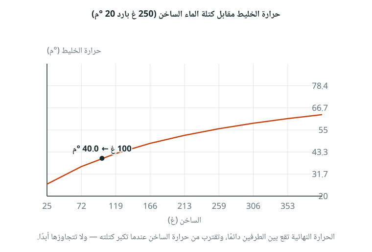

ماء ساخن + ماء بارد: أين تستقر الحرارة؟
غيّر كتلة الماء الساخن وشاهد حرارة الخليط. محاكاة تعليمية لا قياس فيزيائي حقيقي.
محاكاة تعليمية لا قياس فيزيائي حقيقي: الأرقام تُحسب من النموذج لحظيًا، ولا تُقاس بأدوات منزلية.
افتراضات النموذج والمصدر
T = (m₁·c₁·T₁ + m₂·c₂·T₂)/(m₁·c₁ + m₂·c₂)
ماء مع ماء (c متساوية)
لا فقد حراري
الوعاء مهمل السعة
الماء الساخن عند 90 °م؛ الماء البارد 250 غ عند 20 °م.
املأ كأسًا بـ250 غ من الماء البارد عند 20 °م، ثم أضف 100 غ من الماء الساخن عند 90 °م وحرّك. الحرارة النهائية ستكون قريبة من 40 °م، لا في المنتصف الحسابي (55 °م) — لأن الكتلة الباردة أكبر.
مبدأ حفظ الطاقة: ما يفقده الساخن يساوي ما يكسبه البارد عند تساوي السعة الحرارية النوعية، فتكون الحرارة النهائية متوسطًا مرجَّحًا بالكتلة لا متوسطًا بسيطًا. ولذلك يبرد مشروبك أكثر إذا أضفت ثلاث مكعبات لا مكعبًا واحدًا، ويبرد أقل إذا كان الكأس مملوءًا أصلًا.
ما لا يُقاس منزليًا: السعة الحرارية ولا الفقد للجو. الكأس الزجاجي نفسه يشارك في التبادل، فالحرارة المقيسة أقل من المحسوبة بدرجة أو درجتين — وهذا فرق حقيقي لا خطأ في الحساب.
كيف تعمل الظاهرة؟
عند المزج تنتقل الطاقة من الجزيئات الأسرع (الساخنة) إلى الأبطأ عبر التصادم حتى يتساوى متوسط الطاقة الحركية، وعندها يتوقف صافي الانتقال وتصل الحرارة إلى قيمة ثابتة.
العلاقة بالأرقام
المعادلة: T = (m₁·c₁·T₁ + m₂·c₂·T₂)/(m₁·c₁ + m₂·c₂). عند كتلة الماء الساخن 100.00 غ، يعطي الحساب: حرارة الخليط = 40.0 °م؛ ارتفاع حرارة البارد = 20.0 °م؛ كتلة الماء البارد = 250 غ. حالة «ساخن أقل كتلة» (كتلة الماء الساخن 100.00 غ): حرارة الخليط = 40.0 °م؛ ارتفاع حرارة البارد = 20.0 °م؛ كتلة الماء البارد = 250 غ. حالة «كتلتان متساويتان» (كتلة الماء الساخن 250.00 غ): حرارة الخليط = 55.0 °م؛ ارتفاع حرارة البارد = 35.0 °م؛ كتلة الماء البارد = 250 غ. هذه أمثلة مولدة من دالة الحساب نفسها؛ وليست قياسات فعلية أو مواصفات لجهاز تجاري.
مفاهيم متقاربة
يُخلط بين «التوازن الحراري» و«التوازن الكيميائي»: الأول تساوي الحرارة ولا يعني تساوي المواد، والثاني يتعلق بمعدلات التفاعل ولا يشترط تساوي الحرارة.
حدود التطبيق
الحساب يفترض سعة حرارية متساوية (ماء مع ماء) ولا فقد للجو ولا سعة للوعاء. مع سائلين مختلفين يجب إدخال c لكل منهما؛ ومع وعاء ثقيل يلزم إضافة حرارته.

| الكمية | القيمة | المصدر |
|---|---|---|
| حرارة الخليط — الحالة الافتراضية | 40.0 °م | [1] |
| ارتفاع حرارة البارد — الحالة الافتراضية | 20.0 °م | [1] |
| كتلة الماء البارد — الحالة الافتراضية | 250 غ | [1] |
المصادر
- 1 Thermal equilibrium — mixing calorimetry — Wikipedia. en.wikipedia.org/wiki/Thermal_equilibrium · اطُّلع عليه 2026-11-19
- 2 Specific heat capacity of water — The Engineering ToolBox. www.engineeringtoolbox.com/specific-heat-capacity-water-d_660.html · اطُّلع عليه 2026-11-19
راجعه: عبدالله الهويدي — مراجعة في تطبيق انفراد · 2026-11-19 · آخر تحديث 2026-11-20
رجوع إلى المعمل